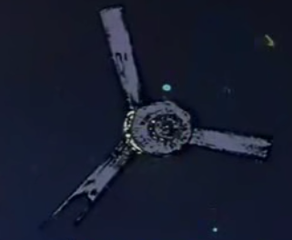
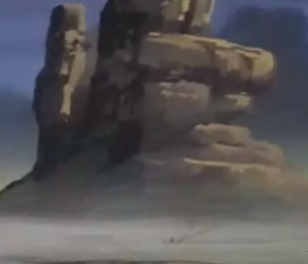

Texas Colony Texas Colony
Side 5, Shoal Zone Damaged Mirrored Colony Adrift A derelict colony barely remaining functional, Texas was used as a wildlife preserve on Side 5, both for production of foodstuffs and for recreation. Miraculously spared the massacre of the battle of Lourm, Texas remains alone in the gigantic side 5 shoal zone, able to sustain life, but only barely able to do so. One of its mirrors is not functional, making the colony run on minimal settings and turning the prairie inside into a near desert wasteland, with little natural life remaining inside the colony walls. Texas Colony  |